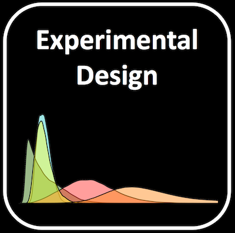
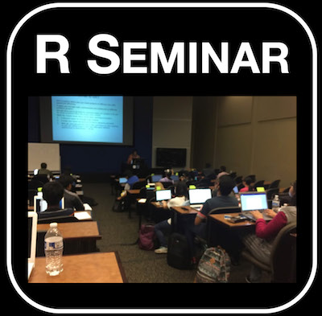
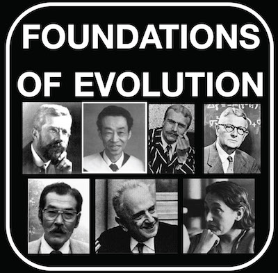
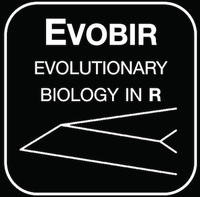
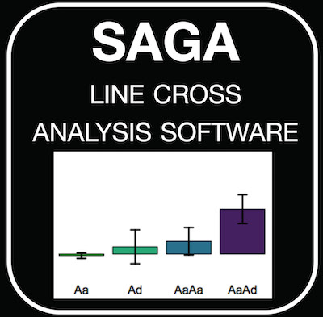
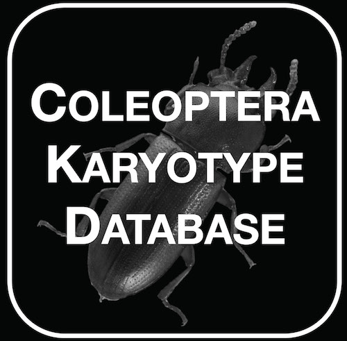
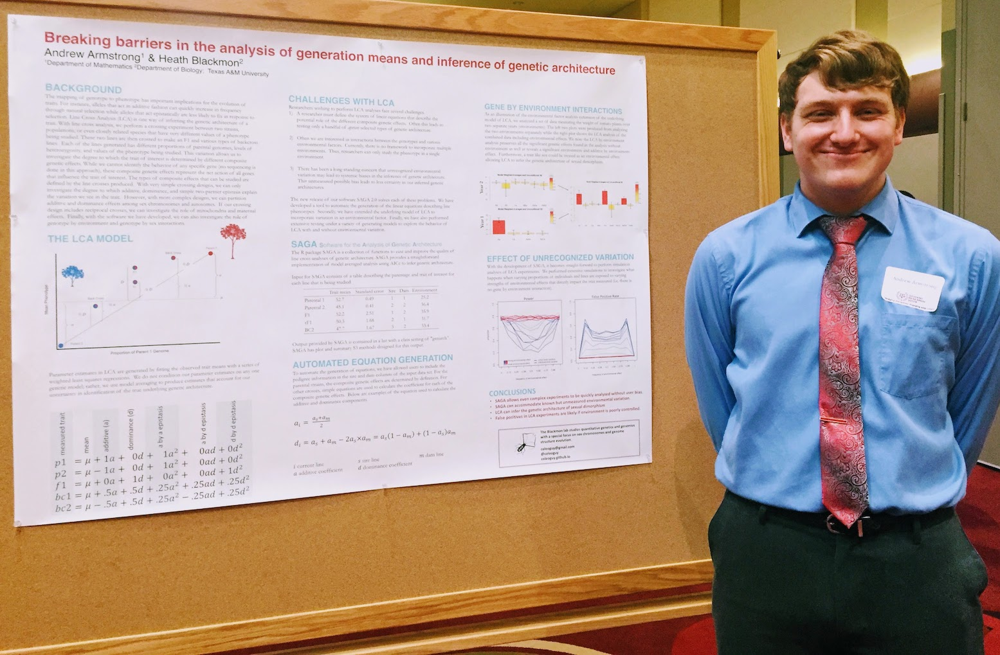
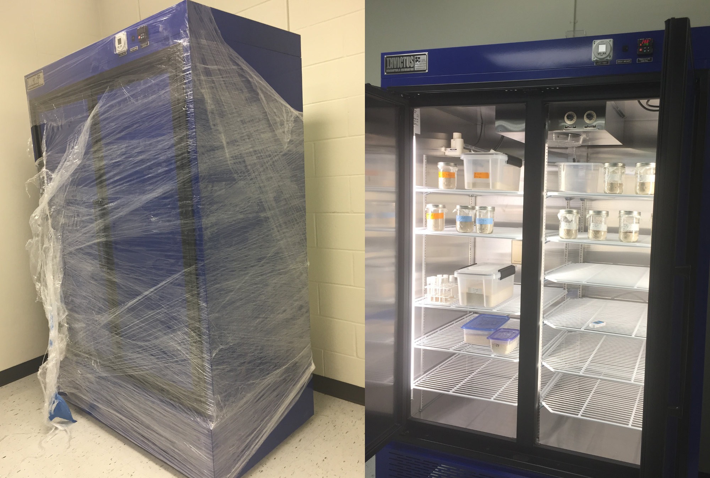
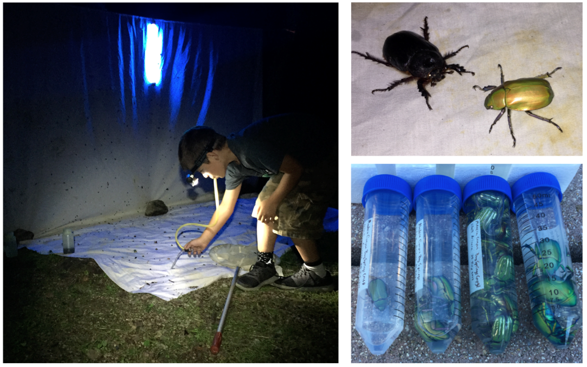

Blackmon Lab
Evolutionary Biology
Research
The Blackmon Lab is in the Biology Department at Texas A&M University. We have two broad areas of inquiry. The first is genome evolution, specifically sex chromosome and structural evolution. The second is the development of methods and databases that accelerate the analysis of data within a quantitative genetic or phylogenetic framework. To address these topics, we use a broad range of approaches including theoretical population genetics, bioinformatics, genomics, and molecular cytogenetics. Although we have projects involving all types of organisms, we often study beetles, and we keep several species in the lab as model organisms.
Fragile Y Hypothesis
Chromosomal sex determination is phylogenetically widespread, having arisen independently in many lineages. Decades of theoretical work provide predictions about sex chromosome differentiation that are well supported by observations in both XY and ZW systems. However, the phylogenetic scope of previous work gives us a limited understanding of the pace of sex chromosome gain and loss and why Y or W chromosomes are more often lost in some lineages than others, creating XO or ZO systems. Contrary to our initial expectations, we find that highly degenerated Y chromosomes of many members of the Coleoptera suborder Polyphaga are rarely lost and that cases of Y chromosome loss are strongly associated with chiasmatic segregation during male meiosis. We propose the "Fragile Y Hypothesis" that recurrent selection to reduce recombination between the X and Y chromosome leads to the evolution of a small pseudoautosomal region, which, in taxa that require XY chiasmata for proper segregation during meiosis, increases the probability of aneuploid gamete production, with Y chromosome loss. This hypothesis predicts that taxa that evolve achiasmatic segregation during male meiosis will rarely lose the Y chromosome.
Genetic Architecture
The pace and direction of evolution are governed by the genetic architecture of trait variation. Evolutionary biologists have disagreed about whether genes can be considered to act in isolation, or in the context of their genetic background (Fisher Wright debate). Line cross analysis (LCA) estimates genetic architecture parameters conditional on the best model chosen from a vast model space using relatively few line means and ignores uncertainty in model choice. To address these issues, we introduced an information theoretic approach to LCA, which comprehensively assesses the potential model space, quantifies model selection uncertainty, and uses model weighted averaging to estimate composite genetic effects accurately. Using simulated data and previously published LCA studies we have shown the utility of our approach to define the components of complex genetic architectures. Our analysis of 20+ previously published datasets also shows that traditional approaches have underestimated the importance of epistasis.
Insect Karyotypes
Insects exhibit variation in both chromosome number and sex chromosome systems. Insect karyotypes have been an important source of data for both taxonomic and basic evolutionary biology research. Unfortunately, this data has always been scattered among journals and dissertations that are not accessible without subscriptions. We created the Tree of Sex Database to make this data open and available to all researchers. We curate the insect portion of this database that currently has over 15,000 records and has proven to be a valuable resource to explore and test ideas about the evolution of high-level genome evolution. Recently we published a synthesis of this vast dataset and uncovered many interesting patterns and avenues for future investigations. We also recently published a subset of this data as the Coleoptera Karyotype Database. Beetle karyotypes are particularly powerful since they normally include information about the meiotic behavior of sex chromosomes.
Chromosome Number
It has long been thought that in Eusocial insect selection to increase genetic diversity within a colony should indirectly select for increases in the number of chromosomes. To test this long-standing hypothesis, we investigated the relationship between eusociality and chromosome number across Hymenoptera. We found that solitary and social Hymenoptera do not have significantly different numbers of chromosomes. However, we did find that chromosome number evolves more quickly in social than solitary Hymenoptera. It remains unclear whether variable selection pressure or drift are responsible for this difference.
Publications
Google Scholar
2017
Blackmon H., Y. Brandvain. Long-term fragility of Y chromosomes is dominated by short-term resolution of sexual antagonism - Genetics Early online
Blackmon H., Ross L, Bachtrog D. Sex determination, sex chromosomes and karyotype evolution in insects. – Journal of Heredity 108:1 78-93 – recommended by Faculty of 1000. PDF
Adams R., D Schield, D. Card, H. Blackmon, and T. Castoe. GppFst: Genomic posterior predictive simulations of Fst and dxy for identifying outlier loci from population genomic data – Bioinformatics – doi:10.1093/bioinformatics/btw795. PDF
2016
Blackmon H. and J.P. Demuth. An information-theoretic approach to estimating the composite genetic effects contributing to variation among generation means: moving beyond the joint-scaling test for line cross analysis. – Evolution 70:2 420-432. PDF
Asian Longhorn Beetle Consortium (67 Authors). Genome of the Asian longhorned beetle (Anoplophora glabripennis), a globally significant invasive species, reveals key functional and evolutionary innovations at the beetle-plant interface. Genome Biology 17:1 227 - Responsible for analysis of genome structure evolution. PDF
Ross, L. and H. Blackmon. Sex Determination. In R. Kliman (Ed.) Encyclopedia of Evolutionary Biology. 81-88 Elsevier Academic Press. doi:10.1016/B978-0-12-800049-6.00146-3. PDF
Adams R.; H. Blackmon; J. Reyes-Velasco; D. Schield; D. Card; A. Andrew; N. Waynewood; T. Castoe. Microsatellite landscape evolutionary dynamics across 450 million years of vertebrate genome evolution. Genome 59:5, 295-310 - Editor’s choice. PDF
2015
Blackmon H., N. Hardy, L. Ross. The evolutionary dynamics of haplodiploidy: genome architecture and haploid viability. Evolution 69:11 2971-2978. PDF
Blackmon H. and J. P. Demuth. The fragile Y hypothesis: Y chromosome aneuploidy as a selective pressure in sex chromosome and meiotic mechanism evolution. Bioessays 37:9 942-950. PDF
Blackmon H. and J. P. Demuth. Coleoptera Karyotype Database. The Coleopterists Bulletin 69:1 174-175. PDF
Ross, L., H. Blackmon, P. Lorite, V. Gokhman, and N. Hardy. Recombination, chromosome number and eusociality in the Hymenoptera. Journal of Evolutionary Biology 28:1 105-116. PDF
Blackmon H. and J. P. Demuth. Genomic origins of insect sex chromosomes. Current Opinion in Insect Science 7 45-50. – recommended by Faculty of 1000. PDF
2014
Blackmon H. and J. P. Demuth. Estimating tempo and mode of Y chromosome turnover: explaining Y chromosome loss with the fragile Y hypothesis. Genetics 197:2 561-572. PDF
Blackmon H. Coleoptera Karyotypes: The evolution of sex chromosomes and chromosome number. Newsletter of the Ontario Entomological Society 19:2 19–21. PDF
Streicher, J. W., T. J. Devitt, C. S. Goldberg, J. H. Malone, H. Blackmon, and M. K. Fujita. Diversification and asymmetrical gene flow across time and space: lineage sorting and hybridization in polytypic barking frogs. Molecular Ecology 23:13 3273-3291. PDF
Ashman T., D. Bachtrog, H. Blackmon, E.E. Goldberg, M.W. Hahn, M. Kirkpatrick, J. Kitano, J.E. Mank, I. Mayrose, R. Ming, S.P. Otto, C.L. Peichel, M.W. Pennell, N. Perrin, L. Ross, N. Valenzuela, and J.C. Vamosi. Tree of Sex: A database of sexual systems. Nature Scientific Data 1:140015. – responsible for 11,526 invertebrate records and all figures. PDF
2012
Blackmon H. and J. P. Demuth. Ring Species and Speciation. Encyclopedia of Life Science. www.els.net. PDF
Resources
Teaching
 This course is intended to provide a foundation in the proper design of scientific research projects in the field of biology. A wide range of biological experiments are covered, and each type of experiment is explored with an eye toward choosing the appropriate statistical technique for analysis. By the end of the course, successful students will be able to design biological studies that are statistically tractable and perform basic statistical analyses using the programming language R.
 R for biologists seminar: R is currently an essential tool for most evolutionary biologists. This seminar includes tutorials and example datasets for many basic analyses in R that are commonly encountered in ecology and evolution. The seminar starts off with the most basic steps (installation) so no prior experience is needed to use these exercises.
 Foundations of evolutionary biology: An understanding of the foundational ideas that the modern synthesis of evolutionary biology is built on is essential for asking intelligent questions and understanding how your research fits into a larger understanding of life. I offered a foundations of evolutionary biology seminar course for graduate students that provided a structured environment to discuss some of the most important papers in evolutionary biology. This website contains a schedule and PDF files for all of the readings in this course.
GitHub software repository I do most all of my development and analyses in public repositories.
R packages
 The package evobiR is a collection of R functions that I have developed for different projects. The functions in this package can be loosely organized into either analysis of empirical data, simulation functions, or those created primarily for didactic purposes. A vignette demonstrating its use is available. Instructions for installing the latest version from github are available here.
 The package SAGA is a collection functions to ease and hopefully improve the quality of line cross analysis of genetic architecture. The overall goal is to allow for an easy and straightforward implementation of model averaged analysis using AICc. A vignette demonstrating its use is available. Instructions for installing the latest version from github are available here.
Databases
 Coleoptera Karyotype Database: Karyotypes are a highly variable and complex trait that offers an opportunity to detect changes in genome organization, uncover phylogenetic history, and distinguish cryptic species. The current database contains 4,861 Coleoptera karyotypes which we have compiled from 240 publications. The Coleoptera Karyotype Database allows users to select the records that they wish to retrieve based on either taxonomy or trait values and builds a customized table of the results in a new window.
The Tree of Sex Database: this is a product of a working group sponsored by the National Evolutionary Synthesis Center which sought to compile all information on sex determination systems across the tree of life. To date, we have collected over 30K records including more than 10K invertebrates. Much like the Coleoptera Karyotype Database, our goal is to make this data widely available allowing researchers across the globe to use data that was previously difficult to collect.
Lab Members
Principal Investigator

Heath Blackmon received his PhD in the Demuth lab at the University of Texas at Arlington in 2015 while studying the evolution of sex chromosomes and karyotypes in Coleoptera and invertebrates. He then transitioned to a postdoc for two years at the University of Minnesota. While there he collaborated with Emma Goldberg and Yaniv Brandvain on projects spanning population genetics and macroevolution. Heath opened his own lab at Texas A&M University in the fall of 2017.
CV - January 2018
Graduate Students
Terrence Sylvester
Terrence joined the lab as a biology Ph.D. student in 2017. He is currently exploring the relationship between sexual systems and rates of chromosome evolution in Phasmatodea. Terrence has broad interests in evolutionary biology. He is working to develop a project that will allow him to combine field work with with his interest in the evolution of genome complexity and structure.
Undergraduates
Nathan Anderson
Nathan is a math major that joined the lab as an undergraduate researcher in 2017. Nathan is working in R to develop a statistical test to detect when transitions in two discrete traits are found closer together than we would expect under a variety of possible null models.
Andrew Armstrong
Andrew is a math major that joined the lab as an undergraduate researcher in 2017. Andrew is working to extend methods for the inference of genetic architecture by the analysis of line means. This work will lead to a new release of our R package SAGA.
Paulina Serra Rossi
Paulina is a biology major that joined the lab as an undergraduate researcher in 2018. Paulina is working on bioinformatics project to develop a python pipeline to infer changes in the size of the pseudoautosomal region of sex chromosomes by mapping short read data to assembled genomes.
Join us
I am currently recruiting a postdoc, graduate students, and undergraduates. Interest in the evolution of sex chromosomes or genomic structure or more broadly trait evolution could make you a good fit in the lab. While most of my work focuses on beetles motivated students wishing to work in other groups or on purely theoretical problems are also welcome. Please read my expectations for lab members and then contact me for more information.
The application deadline for Texas A&M is December 1st. If you are interested you should email me so we can discuss your potential fit with the lab. You can become part of the lab through three different degree programs. There is the traditional biology graduate program. However, there are also two interdepartmental programs where you can earn a PhD in either EEB or Genetics.
Collaborators
Rich AdamsDoris Bachtrog
Yaniv Brandvain
Todd Castoe
Jeff Demuth
Matt Fujita
Emma Goldberg
Laura Ross
News
-
Twitter News
Tweets by coleoguy
-
March 2018
Andrew and Nathan both did a great job presenting posters of their work in the lab at the Texas Genetics Conference. Andrew presented a poster on our latest updates to the R package SAGA including some exciting extensions to traditional line cross analysis. Nathan presented the work we have been doing to develop a new approach to detecting contingency in the evolution of binary traits. Andrew was awarded best undergrad poster at the confernce - Congrats Andrew! 
-
October 2017
Read a bit more about the lab, my background, and plans for the future on the TAMU Biology website: Faculty spotlight
We now have a bright shiny new Invictus incubator from Genesee Scientific. This large incubator is where we keep all of our permanent population lines. Soon we should get our second incubator that will be used for experimental lines.

-
August 2017
The outcome of evolution is critically dependent on the nature of natural populations. Are most species well characterized as large panmictic populations or do most species occur as many disjunct demes with limited gene flow? This question is especially important for species like those in the genus Chrysina that are highly sought after by collectors. If the population of one canyon is lost can they repopulate from another adjacent canyon or mountain range? This summer we collected all four species of north American Chrysina. These beetles occur in West Texas, Arizona, and New Mexico. Over the coming year, we will determine the degree to which gene flow occurs among the populations that we have sampled.

- June 2017 The GSA did a nice write up on my plans for the lab on their Genes to Genomes blog.